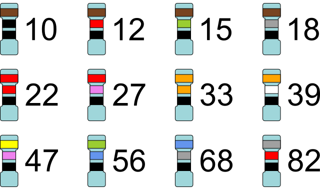
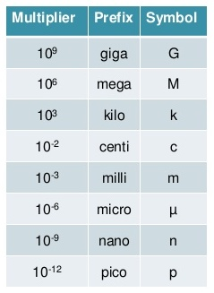
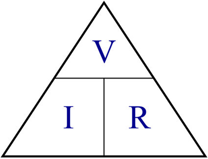
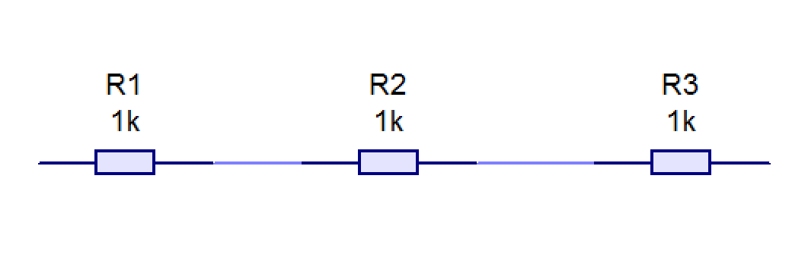
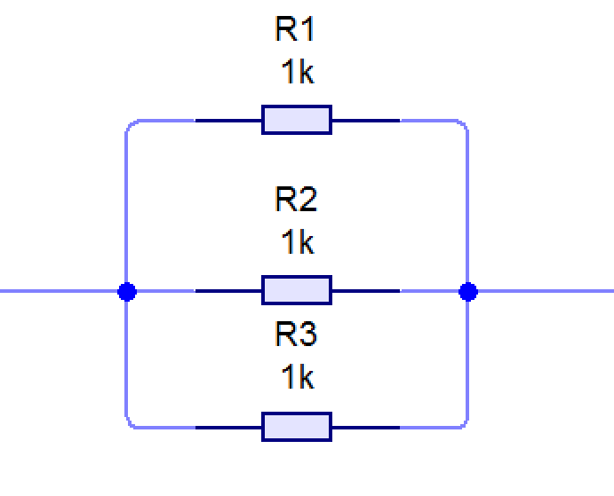
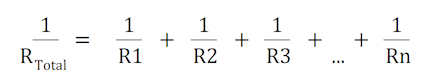
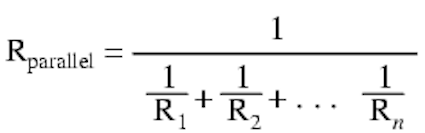

Stock forms of Components
Table of Contents
1 Introduction
Tolerances, Ratings and Values
- Electronic components are not available in any value, they are sold in different vlaue ranges.
- The most common type of resistor values is the 'E12' standard.

- for each value in the E12 series, we simply add a zero onto each number to get the next range up and then another zero and so on.
- For example: 12 becomes 120 and then 1200 and then 12 000 ohms.
- All resistors will be produced with a tolerance, the most common being +/- 5%. This is due to manufacturing processes not being perfect.
- You can get resistors with a tolerance as low as +/- 1%, but these will cost more due to the extra care needed to manufacture these.
- Other values which are important are the maximum input voltage and current rating, for example, all products that are plugged into the mains supply must be rated at 240V.
- If the rating is not high enough, this could cause serious damage to the product as well a being a serious fire hazard.
- This would apply to battery operated devices as well.
Through-hole compnents
- THese are the components you are most aware of, they are components with wire legs that are bent into place and then pushed through a hole in the PCB and then soldered on the opposite side onto copper tracks.
- These components are very useful for hobbyists and the prototyping and testing of PCB designs.
- They are mainly used for small scale manufacture.
Surface mounted components
- Surface-mount technology (SMT) is a way of fixing components onto the PCB instead of through holes.
- There are copper tracks on top of the board and all the components are laid on the PCB in place.
- Each component has solder in place on itself. The PCB with the components is then passed through and oven which melt the solder and solders the components in place.
- This process is used in high speed manufacture as robots are able to pick and place the components very quickly.
Sizes
- It is important to know what units are used in calculations.
- Each unit is given a symbol that goes after the number.
- The unit is often prefixed with a multiplier, see table below.

Unit of current
- Cureent is the measure of the flow of electric charge. It is the measurement of the number of electrons passing a point in the conductor per second.
- Current is measured in amperes (amps).
- The symbol for current is 'A'
Unit of resistance
- The is the measurement of how easy or difficult it is for electrons to move through a conductor.
- Resistance is measured in ohms.
- THe symbol for resistance is the greek symbol for omega 'Ω'
Unit of potential difference (voltage)
- Potential difference (voltage) is the amount of force available to force electrons to move (electricity to flow).
- PD is measured in voltage.
- The symbol for PD is a capital 'V'.
2 Ohm's Law
Tolerances, Ratings and Values
- Ohm's law is the relationship between current, voltage and resistance. It states:
- The potential difference (voltage) across an ideal conductor is proportional to the current through it. The constant of proportionality is called the "resistance", R. Ohm's Law is given by: V = I R where V is the potential difference between two points which include a resistance R.
- To simplify the law:
- When the voltage increases, the current increases. Because there is less force available.
- When the resistance is increases, the current decreases as it is more difficult for current to flow with more resistance.
- Ohm's law calculations are very important in electronics.
- V = I X R
- I = V / R
- R = V / I

Resistors in series
- When resistors are connected one after another, then they are connected in series.

- To calculate the total resistance, we simply add the values together.
- Rtotal = R1 + R2 + R3
Resistors in parallel
- Resistors connected on top of one another are connected in parallel.

- To calculate the total resistance in parallel, is a little more complicated than in series.
- You need to calculate the 'reciprocals' of all the resistors reciprocal = 1 divided by the number; 1/x is the reciprocal of x.
 
Area
- Area is the amount of space inside a flat shape.
- Area is measured in mm², cm² or m².
- Rectangle area = length X width (breadth).
- Triangle area = 1/2 X width X height.
- Circle area = π(pi) X radius²
- π(pi) = 3.142
Diameter
- The diameter, '∅', measures the size of a circle from one side to the other through the centre.
- The diameter is twice the radius.
3 Recap
Practice Questions
- You have a 12V battery and connect it to a 500Ω resistor, calculate the current flowing through the resistor. (3 marks)
- Calculate the resistance needed if you have a 240V supply voltage and want to get 1A to flow through a component. (3 marks)
- how many metres are in the following:
- 1km
- 1000mm
- 0.425km
- If a circuit has the following resistors connected in parallel, calculate the total resistance for the following:
- 1000Ω and 500Ω
- 200Ω and 150Ω
- 500Ω and 500Ω
- Does the E12 resistor series include a 4300Ω resistor?
- Explain the different between surface-mounted and through hole soldering.
- If a circuit has the following resistors connected in series, calculate the total resistance for the following:
- 1000Ω and 500Ω
- 200Ω and 150Ω
- 500Ω and 500Ω